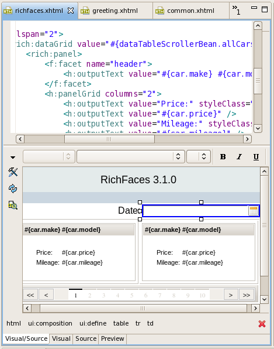

General
XUL Runner
This release uses XUL Runner instead of a custom compiled Mozilla. This gives more stability, less memory usage, ATF compability and support for Mac OSX.
Source navigation
Selection bar now available on source tab too. It shows a path from the current tag to the root.

Editors
Now there is a preview tab that shows the edited page in Preview mode without the editing selections etc. Giving as close an preview as possible.

This release supports RichFaces 3.1.0.
